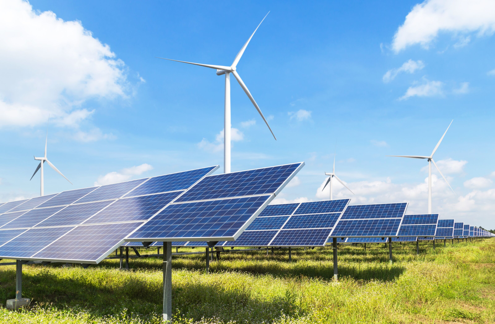
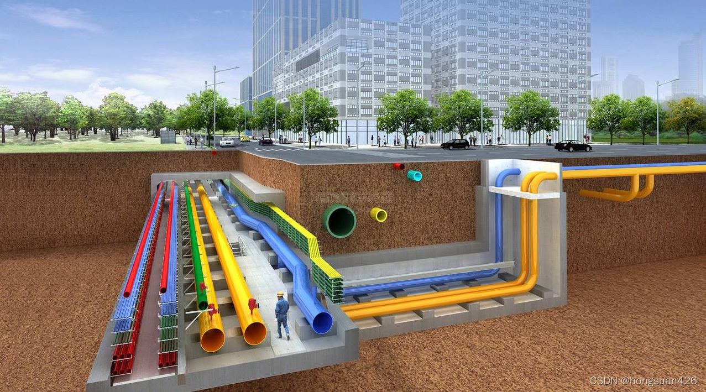
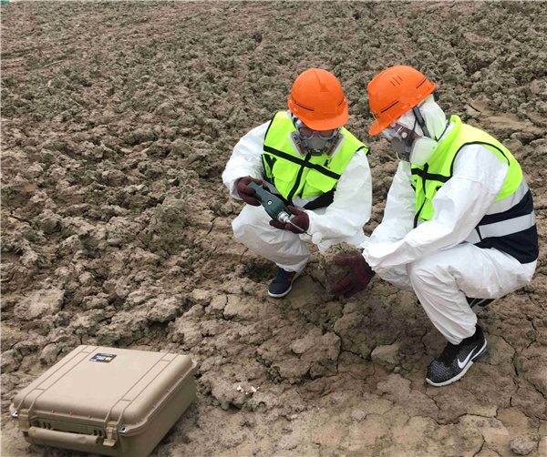

大气污染防治

优化能源结构，提高清洁能源使用比例，如太阳能、风能等。加强工业废气治理，安装高效的废气处理设备，对汽车尾气进行严格管控，推广新能源汽车，同时做好城市绿化，利用植物吸附灰尘和有害气体。
水污染防治

工业废水需严格处理达标后排放，建设完善的污水管网，提高生活污水收集和处理能力。控制农业面源污染，减少农药化肥使用，推广生态农业。治理河流湖泊污染，进行清淤等工作。
土壤污染防治

加强对工业废渣等固体废弃物的管理，防止其污染土壤。合理使用农药化肥，开展土壤污染修复工作，对于污染严重的土壤可采用生物修复等技术。
了解更多环保知识，加入我们，一起行动！